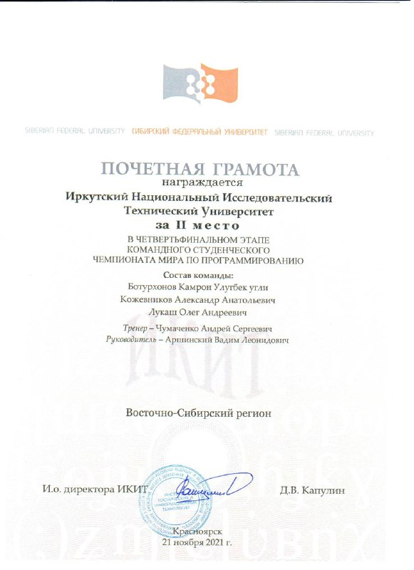
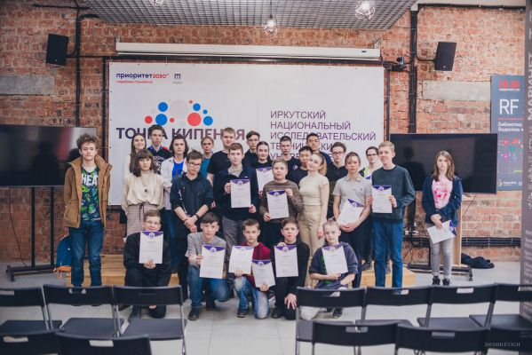

Чемпионат мира ICPC
Студенческая команда ИРНИТУ завоевала второе место в четвертьфинале Чемпионата мира по спортивному программированию ICPC в Восточно-Сибирском регионе.
Интеллектуальный турнир, посвящённый алгоритмическому программированию, состоялся 21 ноября. В данном этапе состязались 50 команд из Барнаула, Красноярска, Новосибирска, Читы, Улан-Удэ и других российских городов. Для иркутян соревнования организовали на площадке Иркутского госуниверситета.

Первенство по СП в ИРНИТУ
16 апреля 2022 года в ИРНИТУ прошло первенство по спортивному программированию. В первенстве приняли участие не только студенты ИРНИТУ, но и школьники Байкальского Центра Спортивного Программирования. Участники соревновались в двух номинациях: Junior и Student div – школьники и студенты соответственно. Студенты успешно справились с решением задач, которые компания Яндекс предлагает к решению на своих стажировках. Участники первенства приобрели навыки в сфере программирования, алгоритмов, математики, а также получили опыт прохождения одного из этапов на стажировки в крупные IT компании.
